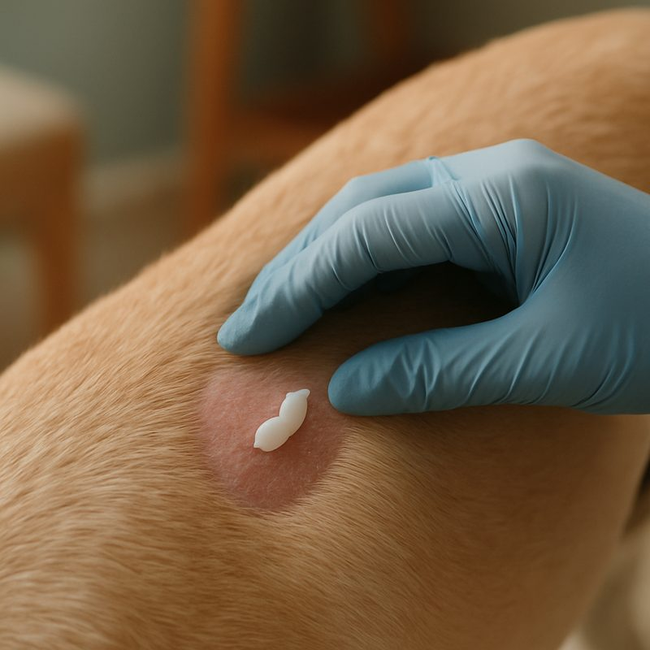
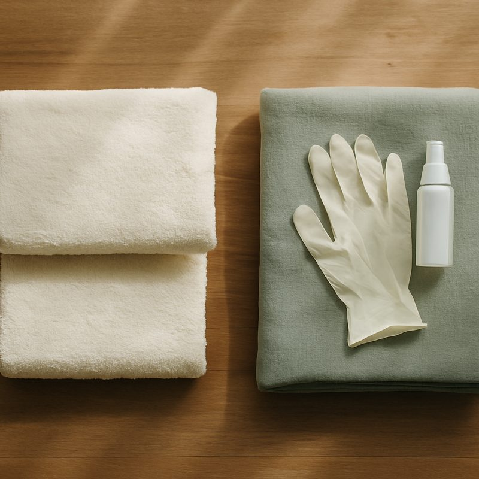

Ringworm in dogs, identification, treatment and prevention
Ringworm is a fungal skin infection, not a worm. Distinctive circular bald patches with red edges, often on the head, ears or paws. Easily treated, contagious to humans (especially children). The hard part isn't the medicine, it is decontaminating the house. Most cases clear in 4 to 6 weeks of topical antifungal cream and oral antifungals if needed. Below: how to identify it, the treatment plan, the cleanup protocol and how it differs from the better-known ringworm in cats.
How to identify ringworm
Classic signs:
- Circular bald patches with red, sometimes scaly edges
- Most often on the head, face, ears or front paws
- Patches typically 1 to 4 cm across
- Mild itch, sometimes none at all (different to flea or atopic dermatitis)
- Hair around the patch breaks easily
- Multiple patches in heavy infections, single patch is most common
Some patches are subtle, looking like a small bald spot rather than the textbook ring shape. If you have multiple pets and one has confirmed ringworm, examine all of them, even those without obvious lesions.
Diagnosis at the vet
- Wood's lamp examination ($30 fee). UV light, around half of ringworm species fluoresce green. Quick screen, false negatives common.
- Hair plucking and microscopy. Look for fungal spores on the hair shaft. Quick but not always definitive.
- Fungal culture ($60 to $120). Growing the fungus in agar over 2 to 4 weeks. Definitive but slow.
- PCR testing ($80 to $150). Modern, faster (3 to 5 days), increasingly common.
For obvious lesions, vets often start treatment based on Wood's lamp + microscopy and confirm later with culture or PCR. For subtle cases or breeding-stock screening, definitive testing is essential.

The treatment plan
Three components, used in combination depending on severity:
- Topical antifungal cream (clotrimazole, miconazole, terbinafine). Apply twice daily for 4 to 6 weeks, or 1 to 2 weeks past resolution. About $30 to $60 a tube.
- Antifungal shampoos (Malaseb, miconazole-based). Twice-weekly bath for moderate-to-severe cases. About $25 a bottle.
- Oral antifungals (itraconazole, terbinafine, griseofulvin). For severe or generalised cases. 4 to 6 weeks of treatment, $80 to $200 total. Side effects include vomiting and elevated liver enzymes; monthly bloods sometimes needed.
Most localised cases (one or two patches on a healthy adult dog) clear with topical alone. Multi-pet households, kittens, immunocompromised pets, or generalised infection usually need oral as well.
Decontaminating the house
Ringworm spores survive in the environment for up to 18 months. The cleaning regime is harder than the medical treatment.
- Hot wash all bedding weekly during treatment
- Vacuum daily and dispose of the bag (not empty into a bin)
- Wipe hard surfaces with diluted bleach (1:10) or specific antifungal disinfectant. Twice weekly during treatment.
- Replace old brushes, combs, collars, soft toys, can't be reliably decontaminated
- Restrict the pet to one or two rooms during treatment if possible. Easier to clean.
- Continue cleaning for 2 weeks past resolution, lesions resolve before spore-shedding stops
The human-health side
Ringworm is zoonotic. People affected get the same circular itchy rash, often on arms or face. Children, elderly and immunocompromised individuals are higher risk.
- Wear gloves when applying topical treatment
- Wash hands thoroughly after handling the pet
- Don't share the dog's bed during treatment
- Affected family members need their own GP visit, the same antifungals work
What it costs in Australia
Total for a localised case in a single-pet household, $300 to $500. Multi-pet, generalised cases can run to $1,500. The find a vet guide helps find a clinic.

Straight answers
How does my dog catch ringworm?
Direct contact with an infected animal (cat, rabbit, other dog) or contaminated surfaces (bedding, brushes, soil). Outdoor dogs can pick it up from infected wildlife. Spores survive in the environment for up to 18 months.
Is it contagious to humans?
Yes, easily, especially to children, elderly and immunocompromised people. Hand washing and not sharing the dog's bed during treatment is the obvious mitigation. Affected humans get the same circular itchy rash, treats with same antifungals.
How is it diagnosed?
Wood's lamp examination (UV light, around 50 per cent of ringworm species fluoresce green) is a fast first screen. Fungal culture from a hair sample is definitive but takes 2 to 4 weeks. PCR is faster (3 to 5 days) and increasingly common, $80 to $150.
How long does treatment take?
4 to 6 weeks of topical antifungal cream (clotrimazole, miconazole) on lesions. Oral antifungals (itraconazole, terbinafine) for moderate-to-severe cases, $80 to $200 for the course. Hardest part is environmental decontamination.
How do I clean the house?
Hot wash all bedding weekly. Vacuum daily and dispose of the bag. Wipe hard surfaces with diluted bleach (1:10) or specific antifungal disinfectant. Throw out old brushes and toys, replace. Done thoroughly, takes 2 to 3 weeks of effort during the treatment course.
Can my cat catch it from my dog?
Yes. Often the cat is the source actually, ringworm is much more common in cats than dogs and many cats are silent carriers. If one pet has it, treat all pets in the household, even apparently unaffected ones.
Ringworm in dogs is generally easier to spot and treat than in cats, the lesions are obvious and dogs don't tend to be silent carriers. The work is in the cleaning, not the medicine. Related: ringworm in cats, flea, tick & parasite treatment, find a vet. Information here is general and isn't a substitute for veterinary advice.